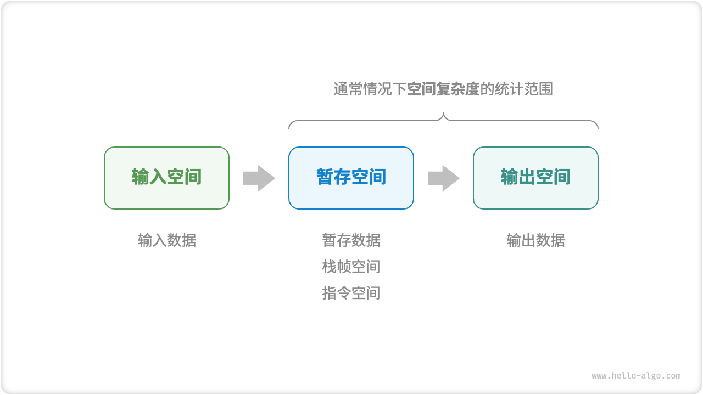
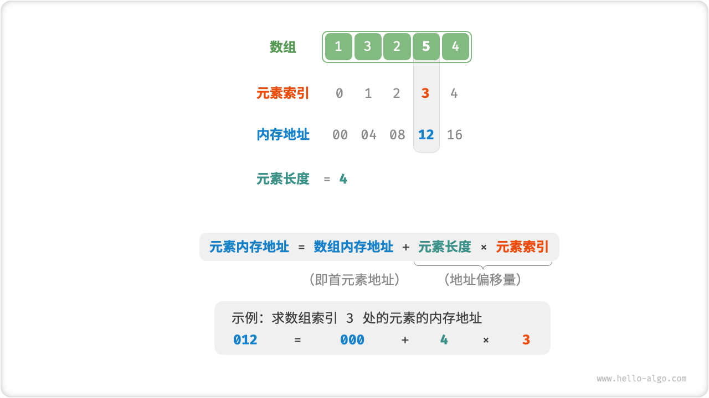
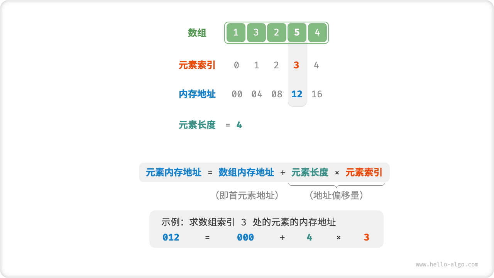

Chapter 2 - Chapter 4¶
- Chapter 2 - Chapter 4
- Chapter 2 复杂度分析
- 2.1迭代与递归
- 2.2时间复杂度
- 2.3 空间复杂度
- Solution for the Maximum Subsequence Sum
- Chapter 3 数组和链表
- 3.1 数组
- 3.2 链表
- Chapter 4 栈与对列
- 4.1栈
- 4.2 队列
- Supplement from Textbook
Chapter 2 复杂度分析¶
2.1迭代与递归¶
2.1.1 迭代 Ieration¶
for循环while循环- 嵌套循环
2.1.2 递归 Recursion¶

调用栈：¶
递归函数每次调用自身时候，系统都会为新开启的函数分配内存，以存储局部变量、调用地址和其他信息等。
尾递归¶
- 普通递归：当函数返回到上一层级的函数后，需要继续执行代码，因此系统需要保存上一层调用的上下文。
- 尾递归：递归调用是函数返回前的最后一个操作，这意味着函数返回到上一层级后，无需继续执行其他操作，因此系统无需保存上一层函数的上下文。
c
/* 尾递归 */
int tailRecur(int n, int res) {
// 终止条件
if (n == 0)
return res;
// 尾递归调用
return tailRecur(n - 1, res + n);
}
递归树¶
斐波那契数列：
2.2时间复杂度¶
2.2.1 Notation 定义¶
- \(\exists c,n_0,s.t.\forall n >n _0 ,T（N）\le cf(N), T(N) = O(f(N))\) \(f(N)是T(N)的上界\)
- \(\exists c,n_0,s.t.\forall n >n _0 ,T（N）\ge cg(N), T(N) = \Omega(g(N))\) \(g(N)是T(N)的下界\)
- 等且仅当\(T(N) = O(h(N))且T(N） = \Omega(h(N))\)时, \(T(N) = \Theta(h(N))\)
- 如果\(T(N) = O(p(N))且T(N)\ne\Theta(p(N))\),则\(T(N) = o(p(N))\) 法则
for循环：最大为循环内语句包括测试的运行时间乘以迭代次数for (int i = 0; i <= N; i++)初始化占1个时间单元，测试占N + 1个时间单元，赋值占N个时间单元，因此总共2N + 2 个时间单元- 嵌套
for循环：该语句的运行时间乘以该组所有for循环的大小的乘积 - 顺序语句：各个语句的运行时间求和（其中语句的最大值就是所得时间）
if/else语句：最大为判断时间+分支中运行时间较长者
2.2.3 函数渐近上界¶
- 推算方法：忽略常数数，省略所有系数，循环嵌套时使用乘法，判断渐仅上界
- 常见类型：
- 幂次阶\(O(N^a)\)多出现在嵌套循环中
- 指数阶\(O(a^N)\)多出现在递归函数中
- 对数阶\(O(logN)\)

#include<stdio.h>
int main()
{
int n = 0;
int h = 0;
int max = 0;
int flag = 0;
scanf("%d %d", &n, &h);
int N = 100000;
int bal[N];
for(int i = 0; i < n; i++)
{
scanf("%d", &bal[i]);
}
for(int i = bal[0] - h; i <= bal[n-1]; i++)
{
int con = 0;
for(int j = 0; j < n; j++)
{
if(bal[j] <= i + h && bal[j] >= i)
{
con ++;
}
if(con > max)
{
max = con;
flag = i;
}
}
}
printf("%d %d", flag, max);
return 0;
}
2.3 空间复杂度¶
2.3.1 相关空间¶
- 输入空间：用于存储算法的输入数据。
- 暂存空间：用于存储算法在运行过程中的变量、对象、函数上下文等数据。
- 暂存数据：用于保存算法运行过程中的各种常量、变量、对象等。
- 栈帧空间：用于保存调用函数的上下文数据。系统在每次调用函数时都会在栈顶部创建一个栈帧，函数返回后，栈帧空间会被释放。
- 指令空间：用于保存编译后的程序指令，在实际统计中通常忽略不计。
- 输出空间：用于存储算法的输出数据。 
2.3.2 推算方法¶
Notice：递归函数需要注意统计栈帧空间：
- 在一个for loop中调用了N次 function() ，每轮中的 function() 都**返回并释放**了栈帧空间，因此空间复杂度仍为\(O(1)\)。
- 递归函数 recur() 在运行过程中会同时存在\(n\)个**未返回**的 recur() ，从而占用 \(O(N)\)的栈帧空间。
2.3.3 常见类型¶
- 常数阶\(O(1)\)：数量与输入数据大小\(N\)无关的常量、变量、对象。 在循环中初始化变量或调用函数而占用的内存，在进入下一循环后就会被释放，因此不会累积占用空间，空间复杂度仍为\(O(1)\)
- 线性阶\(O(N)\):
- 元素数量与\(N\)成正比的数组、链表、栈、队列等。
- 递归深度为\(N\)的递归函数。
Solution for the Maximum Subsequence Sum¶
int max_subsequence_sum(int a[], unsigned int n)
{
int thisssum = 0;
int maxsum = 0;
int best_i = -1, best_j = -1;
for(int j = 0; j < n; j++)
{
thissum += a[j];
if(thissum > maxsum)
{
maxsum = thissum;
best_i = i;
best_j = j;
}
if(thissum < 0)
{
i = j + 1;
thissum = 0
}
}
return maxsum;
}
Analysis¶
Chapter 3 数组和链表¶
3.1 数组¶
 

3.2 链表¶
- 定义： 链表（linked list): 链表由一系列不必在内存中相连的结构组成。每个结构均含有表元素和指向包含该元素后继元的结构指针，称之为next 指针。最后一个单元的next指针指向NULL ;该值由C定义并且不能与其他指针混淆。ANSIC中规定NULL为零。
-
组成结构 链表的组成单位是「节点 node」对象。每个节点都包含两项数据：节点的“值”和指向下一节点的“引用”。
-
链表的首个节点被称为“头节点”（header），最后一个节点被称为“尾节点”。
- 尾节点指向的是“空”，
- 在 C、C++、Go 和 Rust 等支持指针的语言中，上述的“引用”应被替换为“指针”。
常用操作¶
由于链表的不连续性，防止链表丢失“头”节点。
链表类型¶

List Reverse( List L)
{
List head, p, s;
if (L->Next == NULL)
{
return L;
}
head = L;
s = L->Next;
L = s->Next;
while(L!= NULL)
{
p = L->Next;
L->Next = s;
s = L;
L = p;
}
head->Next->Next = NULL;
head->Next = s;
return head;
}
Chapter 4 栈与对列¶
4.1栈¶

4.1.1常见操作¶

Supplement from Textbook¶
抽象数据类型（ADT）：并（union），交（intersction）,求大小（size）,取余数（complement）
表ADT(List)¶
Definition¶
链表（linked list): 链表由一系列不必在内存中相连的结构组成。每个结构均含有表元素和指向包含该元素后继元的结构指针，称之为next 指针。最后一个单元的next指针指向NULL ;该值由C定义并且不能与其他指针混淆。ANSIC中规定NULL为零。
栈ADT(Stack)¶
Definition¶
- Stack: A stack is a list with the restriction that inserts and deletes can be performed in only one position.
- Top: the end of the list called the top.
- Push: The fundamental operations on a stack are push, which is equivalent to an insert,
- pop: pop deletes the most recently inserted element.
The most recently inserted element can be examined prior to performing a pop by use of the top routine.
- Error: A pop or top on an empty stack is generally considered an error in the stack ADT. On the other hand, running out of space when performing a push is an implementation error but not an ADT error.